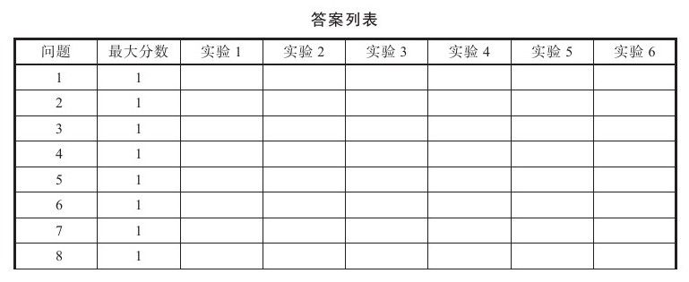
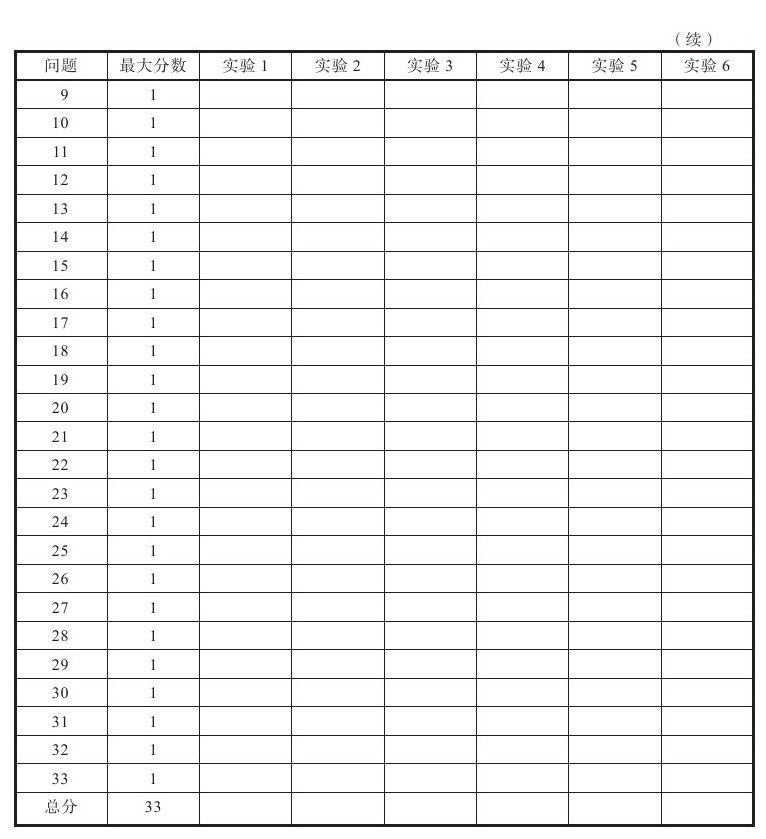

新手只要有念头闪过脑海就开始交易，经验老手知道买入需要认真研究。买入同样还需要资金管理，运用简单的数学公式你就会知道在任何一次交易中所能承担的风险大小，违反这些规则的人在市场中肯定走不远。另外，一些心理技术能让你在交易中少一些压力，多一些轻松，如果在做交易记录时再加一些可取的东西，那就更好了。
所以，在开始下一章学习之前，我建议你回答下列关于心态、资金管理、买入决策的问题并做好交易记录。仔细思考这些问题把答案写在表格中。如果有些问题你还没掌握，那就重读本书的相关章节。
请阅读本章的所有问题，并把选出的答案记录下来。


买入一只股票后，大多数人发现其压力最小是在该股：
1.小幅上涨
2.大幅上涨
3.小幅下跌
4.大幅下跌